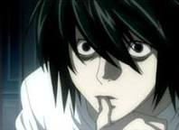

L

Найкращий детектив світу, який береться тільки за справи, де фігурує не менше 10 жертв або 1 млн. доларів. Він, проте, не є співробітником жодної відомої організації. Його особистість на початку історії є засекреченою — спілкуючись через таємничого посередника «Ватарі» та анонімний комп’ютерний образ. У вісім років, коли його знайшов Ватарі, L розкрив «справу вибухів у Манчестері», що врятувало світ від Третьої Світової Війни. Ватарі, зачарований здібностями хлопчика, перевів його в спеціальний притулок для обдарованих дітей, який сам й зробив але ще нікому не вдалось перевершити L. Коли масові смерті злочинців від серцевих нападів привертають увагу Інтерполу, L береться за «справу Кіри».